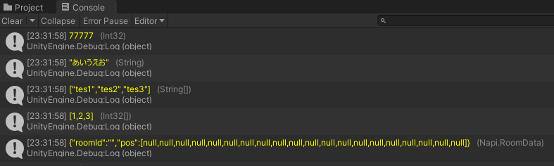

UnityのDebug.Logメソッドで配列等のオブジェクトを表示しようとするとオブジェクト名が表示され中身は見えません。Javascriptで Chrome Devtools に慣れ親しんだ身としては中身を全て確認させてくれー！と思ってしまいます。

####とりあえず調べてみた
いい方法がないかざっくり調べたところ、配列をjoinメソッドで連結して表示する方法がひっかかりました。でもこれでは型毎に文字列変換しなければならないので何かいい方法がないか考えてみました。

###JSON文字列化してログ表示するメソッドを作る
JSON化すれば中身を一覧表示できるじゃないかと思って試してみました。
```cs
using Newtonsoft.Json;

namespace UnityEngine{
    public static class DeepLog{
        public static void Log(object obj){
            var jsonText = JsonConvert.SerializeObject(obj); //JSON化
            string type = obj.GetType().ToString(); //型表示
            type = type.Replace("System.","");
            Debug.Log($"&lt;color=yellow>{jsonText}&lt;/color>   &lt;color=#888888> ({type})&lt;/color>"); //色をつけて表示
        }
    }
}
```
このメソッドを使って以下の5つの型を表示してみます。
```cs
    //表示するもの
    void Start(){
        DeepLog.Log(77777);

        DeepLog.Log("あいうえお");

        string[] test1 = new string[3] {"tes1","tes2","tes3"};
        DeepLog.Log(test1);

        int[] test2 = new int[3] {1,2,3};
        DeepLog.Log(test2);

        RoomData room = new RoomData();
        DeepLog.Log(room); //自作クラス
    }
```
実行！

上手くいきました。

JSON化に関してパフォーマンス的にはSystem.Text.Jsonの方がいいみたいですが対応している型が多いらしいという事でNewtonsoft.Jsonを使用しました。

Chrome devtools のように展開したりはできませんが、とりあえずUnityで手軽にオブジェクトの中身が表示できるようになりました。

